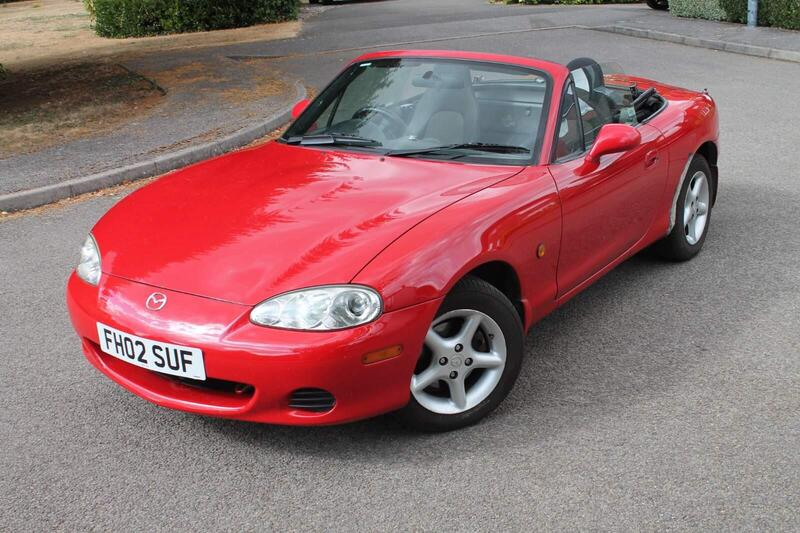
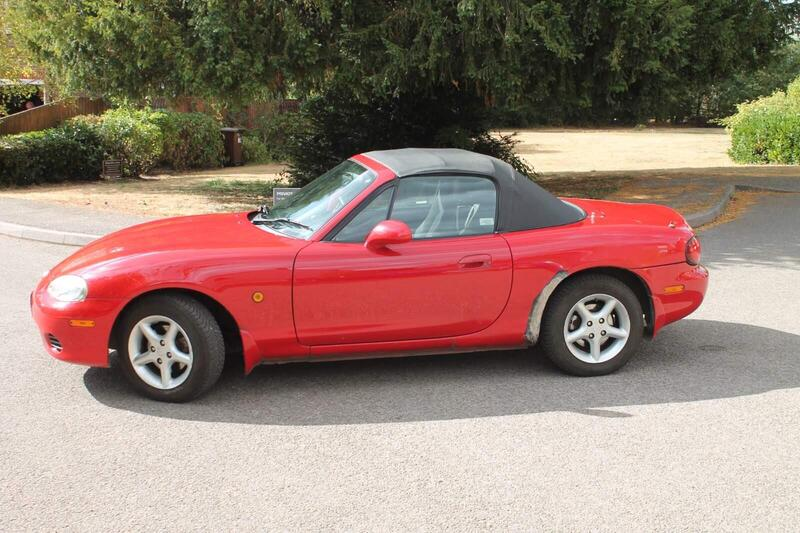

Seller photos from the AutoTrader ad.
2002 MX-5 1.6
A budget way in. Inspect the sills hard.
Key facts
| Price | £1,995 |
|---|---|
| Year | 2002 |
| Miles | 102,169 |
| Variant | 1.6 |
| Edition | Standard |
| Engine | 1.6 |
| Colour | Red |
| Registration | 2002 (02 reg) |
| Owners | 6 owners |
| Seller | Private seller |
| Location | Buckingham |
| From Poole | ~105 mi (estimate) |
| Source | AutoTrader, checked 12 Oct 2026 |
Why buy it
- Cheapest car in the hunt
- Private seller, owned 4 years
Things to check
- 102k miles, 6 owners
102k miles, 6 owners
- 1.6 engine
1.6 engine
- No service history listed
No service history listed
- Mk2.5 weak spots
Sills, rear arches and chassis rails for rust, the hood seams, and when the cambelt was last changed.
Seller says (extract)
“Selling my greatly cherished 2002 Mazda MX-5. I have owned this car for the past 4 years as my first car and I have loved every moment in it. It drives fantastically and has had very few mechanical issues during my ownership. It has never failed to put a smile on my face due to the fantastic gearbox feel and sharp handling. It sounds brilliant with an aftermarket exhaust and air intake but not too loud. Seats are remarkably comfortable for a 24 year old sports car! Selling as I wanted something with air-conditioning. Some highlights: -New soft top roof (2025) -4 Michelin all-year tyres -New Front brake pads -MX5 Parts stainless steel backbox (Nice noise, not loud) -Cobalt air intake -Leather handbrake & gait cover -Chrome air vent and gearbox trim -Red/chrome snooker ball gear knob…”